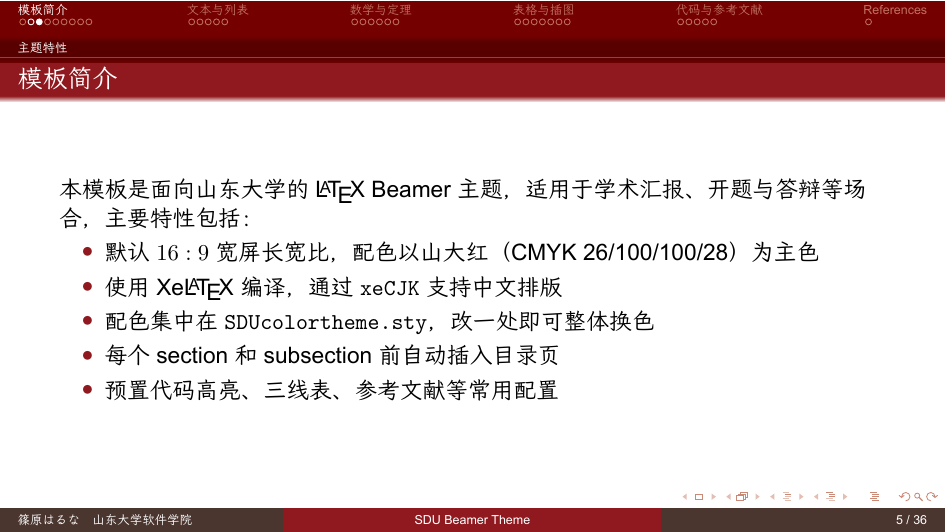
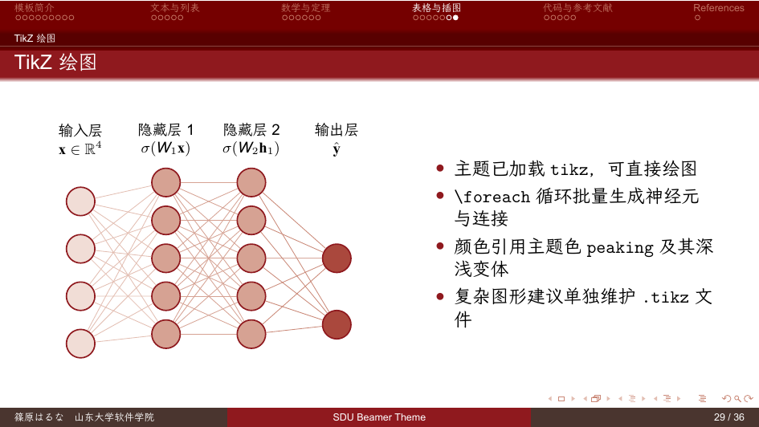

山大红主题色、校徽页脚、规范的封面与目录页。
附 .latexmkrc，latexmk 自动完成 biber 与多遍编译；仓库内 GitHub Actions 每次推送自动构建 PDF。
pack_overleaf.sh 可生成精简包，绕开免费版编译超时限制。
slide.tex 覆盖参考文献、代码高亮、TikZ 插图等学术演示常用场景。
两条产品线并行维护，按需求选择：
| v1.x（main 分支） | v2.x（dev 分支） | |
|---|---|---|
| 定位 | 稳定，沿用原 SDU Beamer 版式 | Moloch/Metropolis 谱系重设计：无导航条、大留白、细进度条 |
| 编译引擎 | XeLaTeX + xeCJK | LuaLaTeX + luatexja-fontspec |
| 字体 | LXGW WenKai + Sarasa Mono（仓库附赠） | Noto Sans CJK + Fira（系统字体） |
| 最新版本 | v1.0.0 | v2.0.0-beta.1（公测） |
git clone https://github.com/ShinoharaHaruna/SDU-Beamer-Theme.git，或在 Releases 页下载起步包 zip。latexmk 生成 slide.pdf，然后改 slide.tex 写自己的内容。git clone https://github.com/ShinoharaHaruna/SDU-Beamer-Theme.git cd SDU-Beamer-Theme latexmk
可以。这是山东大学风格的非官方 Beamer 主题，大量学术报告与答辩场景在用。注意确认所在学院是否要求 pptx 格式——Beamer 输出 PDF，如需 pptx 可用 pdf2pptx 等工具转换。
完整版超出免费版编译时限。仓库自带 pack_overleaf.sh，执行 ./pack_overleaf.sh --no-bib 生成精简包，已验证可在免费版编译。
求稳定、要参加正式答辩选 v1.x；喜欢现代设计风格、愿意尝鲜选 v2.x 公测版。两条线都会持续维护。
v1.x 起步包已附带所需的 LXGW WenKai 与 Sarasa Mono SC 正体字重，Times New Roman / Arial 使用系统自带即可。v2.x 使用 Noto Sans CJK 与 Fira 系列，多数 TeX Live 安装自带。
本项目按 biber 配置参考文献，直接运行 latexmk 会自动处理，不建议改用 bibtex。
SDU-Beamer-Theme is an unofficial LaTeX Beamer theme for Shandong University (SDU), built for academic talks,
thesis defenses, and group-meeting presentations. Two product lines are maintained in parallel: the v1.x series
(XeLaTeX, classic layout) and the v2.x series (LuaLaTeX, Moloch-style modern redesign, currently in beta).
Both ship with one-command latexmk builds, GitHub Actions PDF builds, and a script that produces an
Overleaf-free-plan-compatible package. See
the GitHub repository for documentation and downloads.